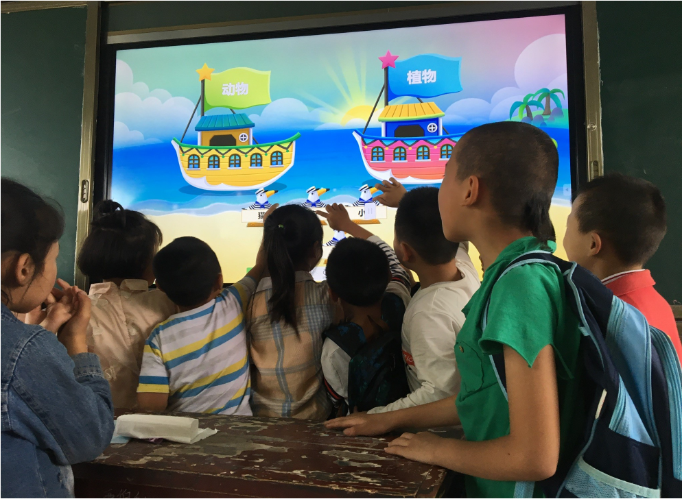

2016年即将过去，作为国家教育信息化十年发展规划的第六个年头，国家政策的支持、需求的增加促使信息化教育装备市场步入了一个高速发展的时代。目前中国教育信息化已经有了长足发展，城乡信息化教育差距却仍然较大，虽然有社会各界的支持，但农村教育信息化进程仍有待进一步推进。
希沃不断进取以推动教育事业持续发展希沃（seewo）品牌从2009年正式面世以来，就一直努力为中国教育事业提供优质的产品与服务。为了成为全球人机交互领域的知名品牌，希沃进行了长期而踏实的品牌建设。2014年希沃发布子品牌“希沃易+”，向智慧校园整体解决方案供应商全面转型，真正告别了传统只卖硬件的模式。希沃（seewo）不仅长期专注于产品的性能研究，更是深入挖掘一线教师的需求，自主研发了一系列切合教师教学的应用软件及完整的教学解决方案。
“希沃2016公益行”助力农村教育信息化建设从2012年教育部颁布了“教育信息化十年发展规划”以来，社会各界对此非常关注，并给予极高的热情。据搜狐教育《从公益支教看农村教育信息化的解决之道》报道，教育信息化已成为解决农村教育资源匮乏，保障农村义务教育水平的有效途径，推进农村教育信息化成为了整个教育信息化进程中的重要组成部分。
作为一家有爱心、有社会责任感的智慧校园整体解决方案提供商，希沃（seewo）今年走访了一些中国乡村小学，了解到的情况令人颇为担忧。国家教育信息化十年发展规划已进入第六个年头，仍有部分乡村学校教学设施落后。据希沃（seewo）走访人员反馈：“我们都知道粉笔灰尘的颗粒，对老师的身体健康有极大的伤害。但就在广东的一所教学点，为了能多写几个字，这里的老师们连粉笔头都舍不得扔。”这些乡村学校的学生大多是留守儿童，他们缺乏父母的照顾，更缺乏与外界的接触。

这些孩子，既是大山的希望，也是中国未来的希望。为助力农村教育信息化，一场名为“希沃2016公益行”的公益活动在江西、湖南、福建、广东、广西、四川、贵州及云南8个省份展开。希沃（seewo）此次耗资300多万，向35个农村教学点捐赠希沃（seewo）交互智能平板等信息化教学设备，并根据学校的实际情况，有针对性地捐赠了推拉黑板、图书、体育器材等基础物资。另外，为进一步提高乡村学校教师信息化水平，希沃（seewo）安排了专业的培训人员深入乡村学校，培训教师们使用这些信息化设备。希沃（seewo）相信，改善农村教育环境，促进教育信息化均衡发展至关重要。
不一样的公益，一样的社会责任心在推动农村教育信息化进程的课题上，希沃（seewo）愿做一个先行者，为教育装备行业树立一个标杆。为进一步助力中国教育信息化，促进教育信息化均衡发展，“希沃公益行”将作为一项常规的公益项目继续被推行。据悉，明年的“希沃公益行”将进一步加大投入力度。此外，希沃或将借助其自身的影响力，联合更多的社会力量，加入到之后的公益行动中来，一起合力推动教育公益事业